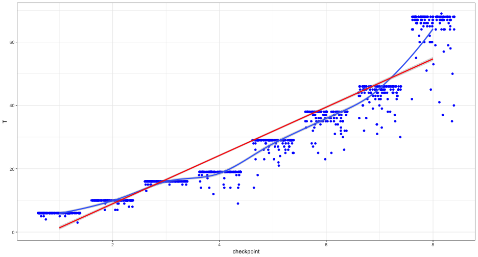
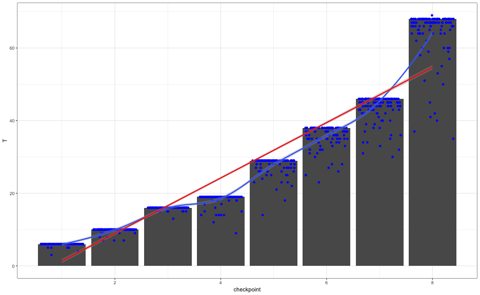
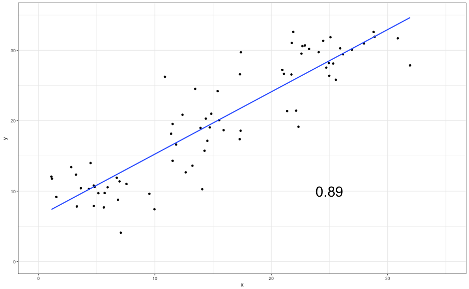
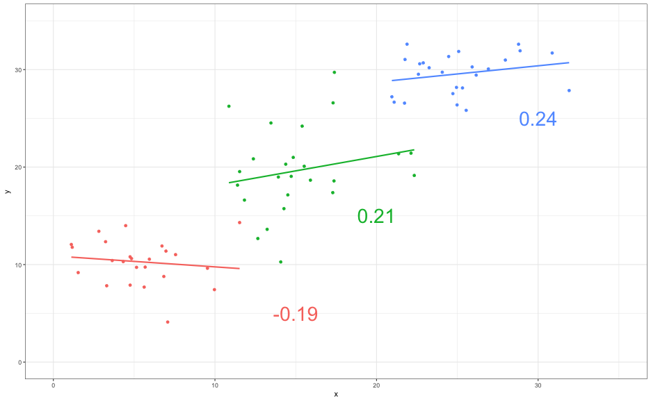
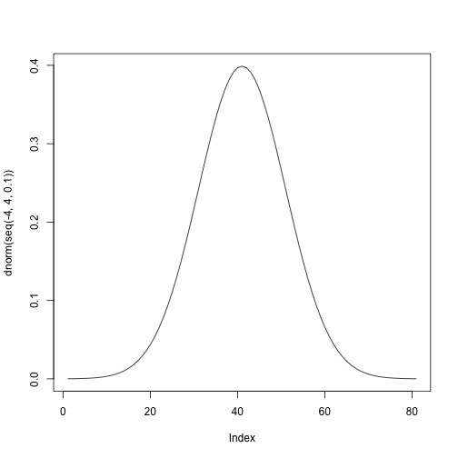
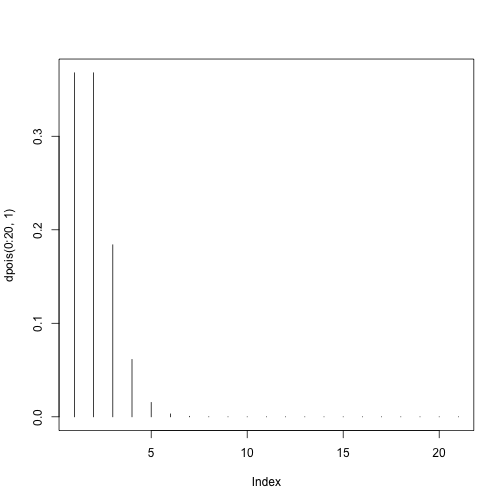

... Where were we?
- Data types and distributions
- Outcome versus predictor variables
- Observational versus experimental data
Daniel Anderson
NOTE: If you need help with either of the above, please contact me. I'd like everybody to be ready to go before we need to use it. Best to get it installed now and make sure it's working so we can troubleshoot if not.
Just because data exist, doesn't mean they are meaningful




Know your data, understand where they came from, and the questions they can and cannot address.
Two basic types of data: Categorical and Numerical
Talk with a neighbor. Identify what types of data each of the following are. Distinguish between ordinal and nominal categorical data.
Discuss with your neighbor - how would these data look different? How would they be similar?


Let's play!
Examples: State test scores, office referrals, peer-to-peer interactions, use of evidence-based practices, etc.
Examples: Treatment status, ELL-status, Disability status, etc.
Examples: Gender, race/ethnicity, FRL-status, Prior achievement, etc.
Try to be clear when you're communicating with others. If the question solely focuses on relationships, that's fine, but otherwise try to be more clear.
For each question below, identify the IV and the DV, and describe each variable as nominal, ordinal, or continuous.
Brainstorm with your neighbor: Come up with an example research question for each of the following scenarios.
Besides the above characteristics, what distinguishes experimental data from non-experimental data?
Are experimental data more or less important than non-experimental data?
http://www.tylervigen.com/spurious-correlations
Note, these all have dual axes, which is a really bad ideal (see http://stackoverflow.com/questions/3099219/plot-with-2-y-axes-one-y-axis-on-the-left-and-another-y-axis-on-the-right)
Well-implemented experiments eliminate the possibility of spurious correlations